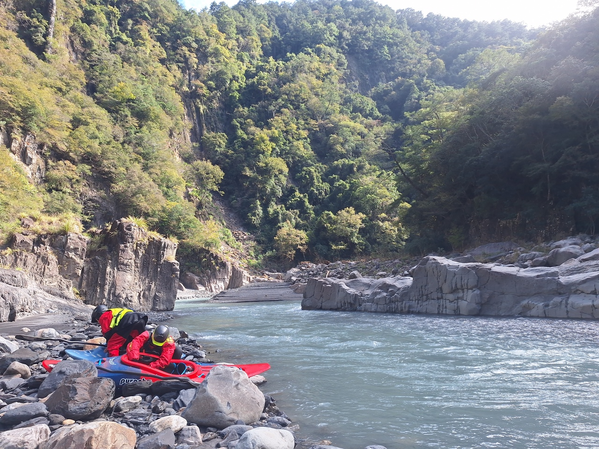
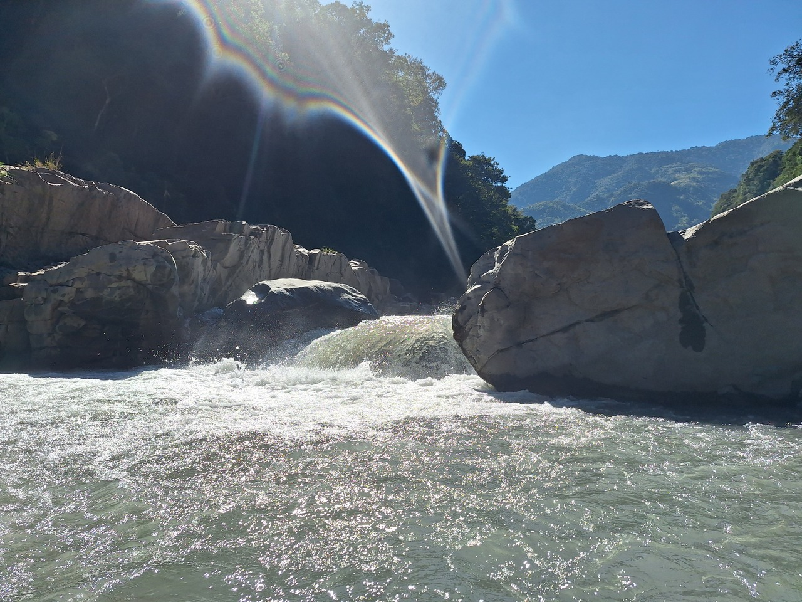

玉峰溪 ∫ 從 Nori-hole 到阿振齁 dt
- 玉峰溪 YuFeng River
- 日期：2024-11-30
- 起點：控溪吊橋－秀巒村 (集水區 120km² / 高823m)
- 終點：玉峰大橋－玉峰村 (集水區 343km² / 高685m)
- 註記：
- 玉峰水位 684.87m
- 高義水位 439.42m
- 激流舟演出 ：博文1、0022、英彥1、阿振2、立德1（依登記順序）
- 交通後勤：彩玲
- 車輛共計4台
好一陣子沒來玉峰溪，從去年玉峰壩新魚道方便通行後，持續好一陣子小水，而今年秋天的颱風瘋狂轟炸，也讓水位高漲，無法拜訪。這次除了兩位新面孔來訪玉峰，更有兩條新船 Ripper 前來三級以上溪谷取得河神祝福。出發前一天，由秀巒的資訊得知白石溪已清澈。打電話詢問玉峰村雜貨店，老闆說水還是濁的，不過有多濁實在很難描述，我便補了句：「像綠豆湯嗎？」電話那方回答「嗯，綠豆湯」不知道是否是我想的綠豆湯？很希望老闆家的綠豆湯跟自助餐的一樣稀。
20241130-YuFengRiver-NoKayak 玉峰溪之一：沒有獨木舟 from WWK on Vimeo.
藍天冷風綠豆水味增湯，舒服的一天，還沒完全通過石牆谷，我就意外地在這中小水特吸的條件下，一個強力 eddy 邊的 hole 捨不得我離開，硬是要把我洗得乾乾淨淨。久到連 002 都已經下船跑到旁邊岸上看著我準備拋繩了，幸好憋起好大一口氣，翻船往下面撈水三四次後，終於咬到主流從出口離開。果然，中小水量的前段河道最難纏。

田埔峽谷以上，河道明顯有許多堆積物、沉積物，整個河床墊高許多，但相對難度降低。田埔峽谷內則是風險增高許多，大量石塊堆積，出現許多石縫，處處是危險，並有不適航溪段。
讓我們快轉到大怒神！⏩⏩⏩到了！
從 Nori-hole 到阿振齁 | 博文視角
全員通過大怒神後，陸續通過幾個船上能勘查的 2 級溪段，抵達阿振齁前，博文划第一個，後頭順序應該是 002 、立德、英彥、阿振。目視前方是約 40 公尺的斜坡，主流呈現連續數個左右彎，抵達末端後為消失的水平線。最下方水平線落差前，左岸有個中型回流區，可停進2-3條船，在這個回流區前一階，左岸有個小 eddy 可停進 1-2 條船。當下沒多思考，便決定順主流下到最後回流區停船上岸勘查。
玻纖槳入水，絲滑沿著最初的主流舌尖下航轉向，正享受著舒服的2+動作時，眼角一瞥，右岸石頭邊有鋼筋露出，連忙轉換重心左切，並順勢閃過幾個障礙物，順利進入最後回流區。回頭向上以手勢揮舞後船靠左閃避，緊跟在後的 002 也順著進來回流區內停等。這時忙著向上游比劃，指揮靠左閃避，卻把起身勘查下方這事忘得一乾二淨，未及時叮囑 002，僅嘴裡唸著 「鋼筋很可怕，你有看到嗎？」 忐忑的心在立德閃到中路後，輕鬆放下。或許，是我沒下船，佔據了回流區，逼得立德續行，緊接「噗！」的一聲，代表他飛越過下方落差。正當繼續手勢指引後方時， 002 划出回流區，英彥閃過鋼筋區通過我身邊。回頭一看下游， 002 的槳仍出現在落差水平線上，這時提裙快跑下船。「噗！」這該是英彥下去了， 002 穩定的四個字「爸爸救我！」冷冷地說。我一手用力拉船上岸，掏出拋繩袋，繞上左岸大石，只看到阿振的紅色 Ripper 往下灌去，垂直向後翻滾了兩圈， 002 被推到了沸騰線邊緣吧？換成阿振接棒了嗎？
腳下踩著的大石，方位最適合拍照了，但若要拋繩，水中苦主看不見，墊步沿溝移動至大石下游側的水邊。聽到英彥喊：「人咧！人咧！」
「出來了！出來了！」立德回答
「沒有！沒有！阿振還沒」英彥再度警示
阿振已滾了三四五圈脫出，但是人咧？沒看到。

僅見白花花湧升處的泡沫，以及一旁載浮載沉的紅色Ripper。爾偶有白色頭盔背對著我閃過水面，又被翻滾流拉下，忍著手上的拋繩袋，靜待阿振的眼神出現水面。看到眼睛，喉頭一鳴「唔！」高聲吆喝，沒反應，再來一輪。
「唔！」「唔！」又滾了四五次，終於看到他眼睛，右手投出壓低的速球，落到好球帶，沒過頭，入水在頭盔前方40公分，等了半秒往回一帶。靠杯！沒抓到！應該要過頭才是。此時主角能見度全無，又滾回到水面擦過繩子，我能左手速速拎繩八字形收於右手準備二拋，眼睛持續盯著阿振接連五六七八次的翻滾。撈起收好的繩盤，右手一抖，被護肘卡了一頓，硬拉才取出，立德的紅色船頭已經在沸騰線邊緣就位。眼前的脫出者，已經變成口鼻整面朝上躺的換氣姿勢，掂量著就算拋到也不可能抓住了。岸上僅我一人，沒法直接活餌，姑且先爬上去跳活餌位置，讓下游的人來補位抓繩，邊爬邊看著持續翻滾的阿振，偶有兩次被推到沸騰線邊緣，但就是離立德船頭一掌之差，又被強回流給收了回去。右手拿著有鎖鉤環，扣上救援快卸的O環，打算叫人靠岸拉繩的話還沒出口，便看著虛弱漂出沸騰線的阿振，扶著紅色船頭。
危機解除！
雖然嶄新的紅 Ripper 兄弟倆，一船在外、一船在內，但總算人都出來了。力竭的阿振癱軟在溪畔大石，刺眼的陽光灑在身上，幸好他正在大口喘息，享受著人間美味的空氣，才能完成這關卡命名的程序。 看著獨自搖滾的它，與吐出來的紅色氣袋相伴，本以為非得活餌了，正思量入水位置時，這魚家兄弟卻不甘寂寞地噴了出來， 002 駕著小船使盡全力推著大紅往岸邊靠來。這時只剩下氣袋還沒玩夠，立德說「博文拋繩看看，看看能不能撈出來？」。我接著回到大石上，嘗試了拋出中段繩耳未果，向下游告知我要活餌去撈，正當溝通準備的同時，一個紅色氣袋漂了出來，立德前往撈起。另一個則在 002 與英彥的後續確保下，活餌拉回。 回到岸邊，見著攤在烈陽下的阿振，正詫異救生衣竟能被水流撕扯開時，恍然大悟，這應該是在享受鮮甜空氣的美好吧？玉峰溪依然流著剛剛一樣濁的溪水，能見度只有40公分，好像什麼事都沒發生過。雖然他們不說，但總覺得溪畔大石默默竊笑著 2009 的 Nori Hole3 續集上演，而且還挑剔著演員們的不專業，與攝影師的不敬業。
咦，天啊！為什麼我的藍色 Nomad 還在上頭！
這！這！這也太恐怖了吧！我居然還沒下完這關
個人檢討項目
- 停等的回流區空間不夠大時，應全隊提早停船
- 回流區停下時應明確告知勘查需求
- 拋繩過頭的話，有更高的抓繩機率
- 穿護肘時，用八字收二拋不會比較快
- 有想法時，應先大聲溝通，不該假設其他人會自動補位
- 最後拯救裝備時，應放慢腳步，不急著處裡
- 全體集結後，可提早用餐休息（雖然往下田埔峽谷口很近，但應考量脫出者的身心理狀態，與恢復情況）
20241130-YuFengRiver-WhitewaterKayak 玉峰溪之二：沒有獨木舟 from WWK on Vimeo.
逐時紀錄
| 時間 | 進度 |
|---|---|
| 09:31 | 白石溪啟航 |
| 09:33 | 通過控溪吊橋 |
| 09:45 | 泰崗白石匯流口 |
| 09:47 | 通過軍艦岩吊橋 |
| 09:56 | 博文吸爆後成功逃逸 （手機GPS漂移20-40秒） |
| 10:21 | 倒車入庫關 （002倒車後二刷正著下） |
| 10:42 | 倒車入庫關後出發 |
| 11:00 | 亂下關 |
| 11:19 | 亂下關後出發 |
| 11:22 | 大怒神勘查 |
| 11:49 | 大怒神後hole全體出發 |
| 11:52 | 阿振 hole 前，博文、002左邊回流停等，立德直接下航，002跟上被吸住，英彥跟上勉強閃開，阿振進入後頂開002補位，完成命名程序。 |
| 12:03 | 阿振 hole 博文活餌氣袋（手機GPS漂移時間點） |
| 12:15 | 阿振 hole 後，博文最後下航 |
| 12:21 | 田埔峽谷前關-觀察與午餐 |
| 12:55 | 田埔峽谷前關-博文英彥下航 |
| 13:00 | 田埔峽谷口 |
| 13:02 | 田埔峽谷第一關-觀察 |
| 13:09 | 田埔峽谷第一關-全員扛船 |
| 13:18 | 田埔峽谷第一關-扛完續航 |
| 13:20 | 田埔峽谷第二關-觀察後與扛船 |
| 13:34 | 田埔峽谷第二關-博文下航 “Where is John” |
| 13:42 | 田埔峽谷第二關-全員通過 |
| 13:44 | 美麗關（Ripper 美照） |
| 13:47 | 長廊關 |
| 14:09 | 長廊全數通過 |
| 14:25 | 玉峰壩前沙洲，堆積更高了，右岸魚梯阻塞，更有漂流木塞滿， |
| 14:35 | 玉峰壩左岸堤上 |
| 14:58 | 玉峰壩第一條船左岸斜坡溜下水 |
| 15:22 | 玉峰壩第一階下左岸全隊上船 |
| 15:23 | 玉峰壩第一階下右岸下船，翻上魚梯下行 |
| 15:56 | 通過玉峰壩魚梯底 |
| 16:31 | 玉峰大橋前上岸 |
| 16:34 | 回到停車處 |